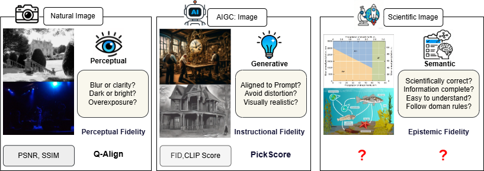

Introduction
Multimodal large language models (MLLMs) are revolutionizing image quality assessment (IQA) by bringing semantic understanding and world knowledge into evaluation. Yet nearly all existing IQA benchmarks ignore scientific imagery, a cornerstone of research, education, and discovery.
Unlike general photos, where quality is judged by blur or noise, scientific images must also be correct, complete, clear, and conventional. A high-quality scientific visualization must: accurately reflect scientific facts (Validity); include all necessary labels, scales, and context (Completeness); be instantly interpretable by experts (Clarity); and follow field-specific norms in style and notation (Conformity).
To address this gap, the SIQA Challenge introduces two tasks that push models beyond pixels—to evaluate scientific integrity through visual reasoning and domain-aware judgment.
Challenge Tasks
🔍 SIQA Understanding (SIQA-U)
Evaluates a model’s ability to reason about scientific image quality through structured visual question answering aligned with the four SIQA dimensions.
Question Types:
- Yes/No: Binary verification of factual, structural, or representational conditions.
- What: Multiple-choice comprehension of scientific entities, relationships, or context.
- How: Quality judgment on completeness, clarity, and disciplinary conventions.
Measures factual verification, semantic understanding, and scientific reasoning.
Evaluation: Weighted accuracy:
Score₁ = 0.2 × ACCyes/no + 0.3 × ACCwhat + 0.5 × ACChow
📈 SIQA Scoring (SIQA-S)
Predicts continuous quality scores along two complementary dimensions:
- Factual Correctness (objective): Alignment with ground-truth science (validity + completeness).
- Perceptual Quality (subjective): Human-expert judgments on clarity and discipline-specific usability (clarity + conformity).
Models predict scores directly from images—no text input required.
Evaluation: For each dimension d ∈ {Factual, Perceptual}:
Score(d) = max( (SRCC(d) + PLCC(d)) / 2 , 0 ) × 100
Final Score₂ = (ScoreFactual + ScorePerceptual) / 2
Timeline
Organizers

Shanghai AI Lab

Shanghai AI Lab
In partnership with universities and open-data initiatives worldwide.
Advisory Committee

Tsinghua University

Peking University

MIT CSAIL
National Natural Science Foundation of China